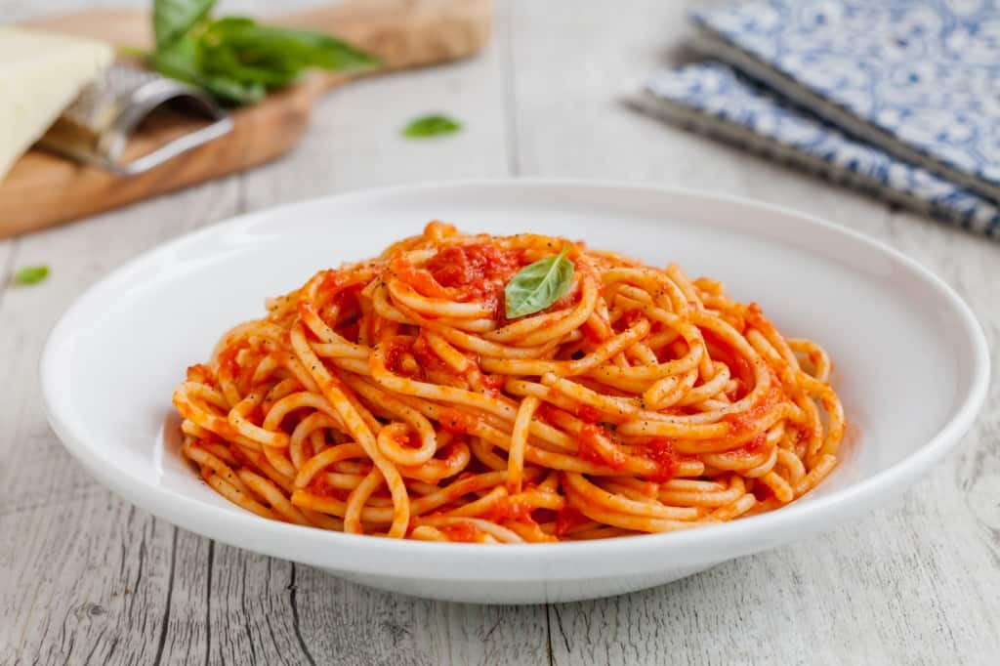

Pasta al pomodoro

Easy and light pasta with tomatoes and garlic, this is a great main dish!
Ingredients
- 1 (16 ounce) package pasta
- ½ cup chopped onion
- 4 cloves garlic, minced
- ¼ cup olive oil
- 2 cups roma (plum) tomatoes, diced
- salt to taste
- ground black pepper to taste
- 2 tablespoons chopped fresh basil
- ¼ cup grated Parmesan cheese
Preparation
- Bring a large pot of lightly salted water to a boil. Add pasta and cook for 8 minutes or until al dente; drain.
- Pour olive oil in a large deep skillet over high-heat. Saute onions and garlic until lightly browned. Reduce heat to medium-high and add tomatoes; simmer for about 8 minutes.
- Stir in black pepper, basil and cooked pasta, tossing thoroughly with sauce. Simmer for about 5 more minutes and serve topped with grated cheese.